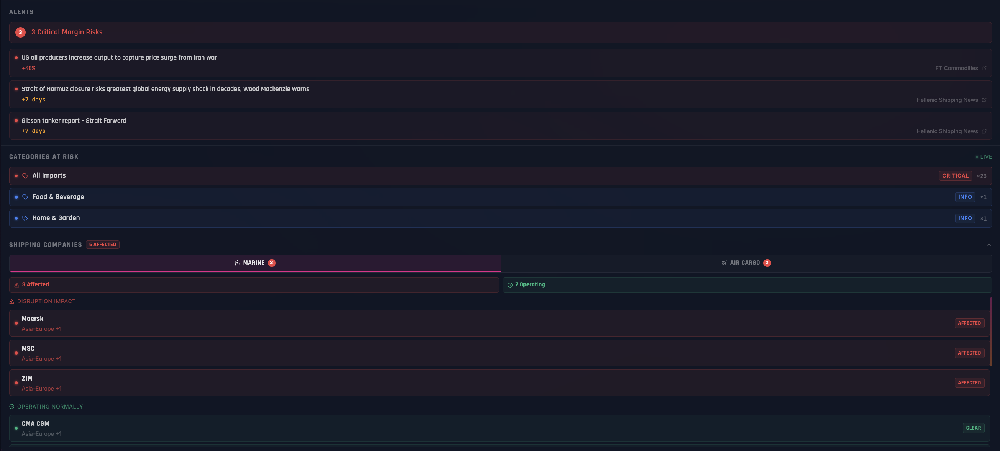
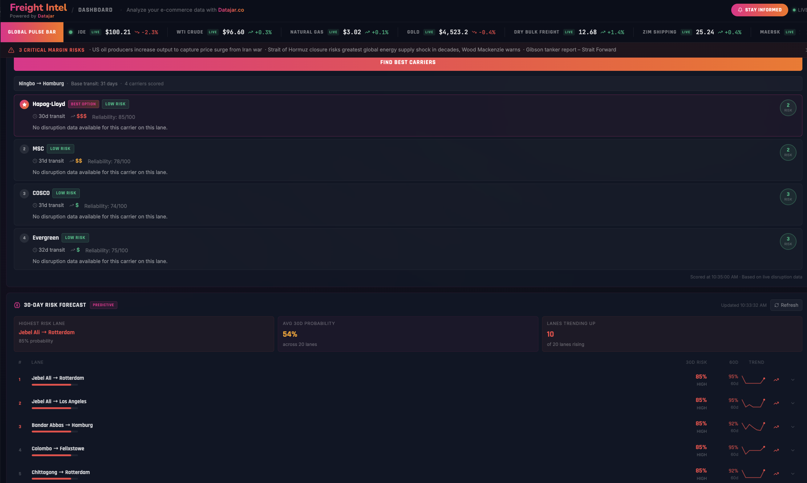
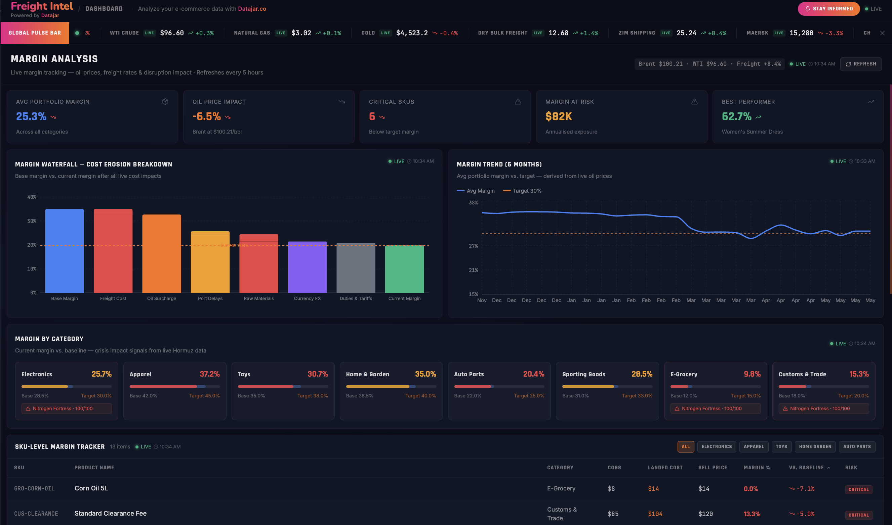
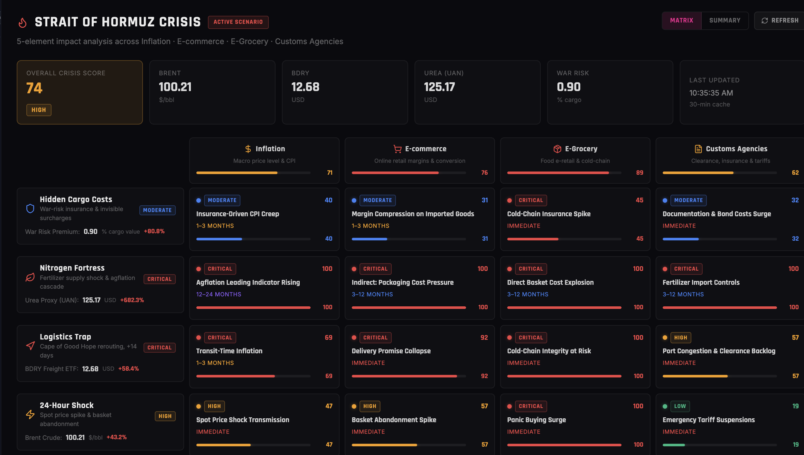

Freight Intel — Navigating Global Volatility with AI-Powered Margin Intelligence
How a problem-first AI platform was designed to close the gap between macro global events and individual merchant SKU profitability — in minutes, not days.
AI-augmented decision support for e-commerce merchants
Freight Intel is an AI-powered decision-support platform designed for e-commerce merchants, logistics managers, and supply chain professionals. Powered by Datajar and built with Manus, the platform addresses the critical challenge of margin erosion caused by real-time global disruptions. By integrating live market data — energy prices, freight indices, commodities — with predictive AI, Freight Intel transforms raw volatility into actionable business intelligence, allowing retailers to protect their bottom line in an increasingly unstable global trade environment.



The "10 Steps Ahead" Problem Perspective
The genesis of Freight Intel was not a technology-first approach — it was a problem-first framework. While most e-commerce managers react to the first-order impact of a global event (a war started, freight rates moved), Freight Intel was designed to solve for the tenth-order consequence: How does this event impact my landed cost for a specific SKU next week — and how should I reprice today?
The Intelligence Gap
There is a massive delay between a macro event (something happened) and a micro-economic impact (what it means for my specific business). Freight Intel was built to close that gap.
-
1
Repricing
Should I increase prices now to protect margins before the cost hits?
-
2
Reordering
Should I stock up before freight rates spike on this route?
-
3
Renegotiating
Do I need to switch carriers or reroute shipments immediately?
By identifying these three merchant decision points, the platform's requirements were naturally defined: ingest commodity prices, carrier availability, and route risks — then synthesize them into a single unified Risk Score.
The "Margin Blind Spot"
In today's e-commerce landscape, traditional static pricing models are obsolete. Merchants face a Margin Blind Spot driven by three compounding forces.
-
01
Hyper-Volatility
Rapid fluctuations in Brent/WTI crude and freight indices (BDRY) can turn a profitable SKU into a loss-leader overnight.
-
02
Invisible Costs
Black swan events — such as a Strait of Hormuz crisis — introduce hidden surcharges like war-risk insurance premiums (+4.5% in recent scenarios) that are rarely captured in real-time by existing tools.
-
03
Information Overload
The inability to classify how a 12% rise in Natural Gas specifically affects an E-Grocery cold-chain cost structure — leaving merchants guessing.
Three core modules, one decision surface
Freight Intel is built around three connected modules, each designed to answer a different merchant question.
Real-Time Global Pulse & Risk Mapping
The Dashboard serves as a live Global Pulse Bar. Unlike generic news feeds, it uses LLM-based classification to filter news by its specific impact on shipping lines and carrier operations — surfacing only what matters to the merchant's current risk exposure.
Dynamic Margin Analysis & Waterfall Tracking
The Margins module provides a Cost Erosion Breakdown using a Waterfall chart that identifies exactly where profit is being lost — whether to freight surcharges, port delays, currency FX, or energy cost pass-throughs.

Predictive Crisis Scenario Modeling
The Crisis Scenarios module quantifies the "Logistics Trap" and "Inflationary Tail" of macro events. It translates global data into merchant-level micro impacts — such as "Indirect Packaging Cost Pressure" from a specific geopolitical scenario — allowing merchants to model responses before costs materialize.

From reactive recovery to proactive resilience
From a product management perspective, Freight Intel represents a category shift in how e-commerce merchants interact with global data.
| Strategic Driver | Description |
|---|---|
| Data Democratization | Providing mid-market merchants with enterprise-grade freight intelligence previously only available to large retailers. |
| Landed Cost Accuracy | Automating "True Landed Cost" calculations with live energy prices and insurance surcharges updated in real time. |
| Operational Agility | Reducing "Time to Action" from days to minutes — giving merchants a window to respond before costs lock in. |
| AI Integration | Using LLMs for structured classification of global news into actionable shipping and carrier impact signals. |
What Freight Intel delivers
Recovery in net margins via dynamic pricing triggered by live cost intelligence.
Automating the monitoring of global data points across energy, freight, and commodity markets.
Protected with accurate delay and cost forecasting before disruptions reach the merchant.
The future of e-commerce intelligence
Freight Intel represents a shift toward Autonomous Commerce Intelligence. By closing the loop between global events and individual SKU profitability, it empowers merchants to survive — and thrive — in a volatile world. The platform does not ask merchants to become macro economists. It asks them only to act on what the intelligence already knows.
Topics covered
Read next
Everstox — Roadmap from Scratch via OST
Built the first inventory-team roadmap using the Opportunity Solution Tree. Shipped stock reconciliation before peak e-commerce season — 30% conversion, 60% monthly use.
Marketplace · B2CGetHalal — 200€ to ~1M€ raise
Bootstrapped Halal meat delivery for 500K underserved Berlin consumers during COVID-19. 250K€ GMV in year 1, 151% customer growth.
Ready to build the future?
Let's collaborate on your next high-impact product. I bring execution-focused design and strategy to complex problems.